1020A20 crank case oil sump - r + r clean seals for sealant application
- Path
- Procedures > 10 ENGINE > 1020 CRANKCASE SUMP AND COVERS > 1020A crank case oil sump > 1020A20 crank case oil sump - r + r clean seals for sealant application
- Kind
- repair procedure (removal / refitting; the operation number is the code)
- Applies to
- all engines; all production periods
- Interactive page
- https://sloeber94.github.io/elrnDB-fDbl/en/#/2584171
Applies to: engines: 1.2 8v; all production periods
 Removing
Removing
 Refitting
RefittingPosition the vehicle on the lift.
Op. 7055B54 PROTECTION/GUARD UNDER ENGINE - R.R.
Op. 2110A60 MANUAL GEARBOX/ENGINE COUPLING BRACKET - R+R
Op. 1020A30 ENGINE OIL DRAIN PLUG - REPLACE
1. Undo the fixing bolts (1a) and remove the flywheel guard (1b).
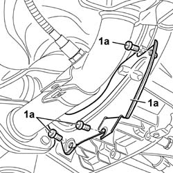
Applies to: engines: 1.2 8v; all production periods
1. Unscrew the lower lambda sensor from the exhaust pipe and remove.
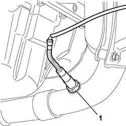
Applies to: engines: 1.2 8v; all production periods
1. Undo the bolts fixing it to the crankcase (1a) and the nuts fixing it to the crankshaft side covers (1b).
2. Use the tool to cut the strip of silicone sealant between the sump and crankcase.
Lower the engine oil sump.
3. Loosen the oil suction head retaining bolts (3a), then remove the engine oil sump (3b).
Description | Code | |
|---|---|---|
2 | Blade | 1.870.718.000 |
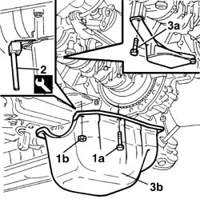
Applies to: engines: 1.2 8v; all production periods
Refitting
RemovingClean the surfaces of the oil sump and the engine crankcase thoroughly completely removing the remaining sealant.
Apply silicon sealant to the entire perimeter of the oil sump.
Type | Component | Description | Qty. | |
|---|---|---|---|---|
- | Silicon sealant | ENGINE OIL SUMP | Arexon RHODORSIL 5552 | - |
Position the crankcase sump in its seat.
Tighten the bolts fixing the engine oil suction head.
Tighten the retaining bolts and nuts.
Fastening | Component | dia | Value (daNm) | |
|---|---|---|---|---|
- | Bolt | ENGINE OIL SUMP | M6 | (Cylinder block/crankcase) 1 |
Fastening | Component | dia | Value (daNm) | |
|---|---|---|---|---|
- | Nut | ENGINE OIL SUMP | M6 | (Covers) 0.7 |
Fit the lower lambda sensor to the exhaust manifold and tighten to torque.
Fit the flywheel guard.
Op. 2110A60 MANUAL GEARBOX/ENGINE COUPLING BRACKET - R+R
Op. 1020A30 ENGINE OIL DRAIN PLUG - REPLACE
Op. 0010T11 ENGINE OIL - CHECK LEVEL AND TOP UP
Op. 7055B54 PROTECTION/GUARD UNDER ENGINE - R.R.
Remove the vehicle from the lift.
Applies to: engines: 1.6 16v; all production periods
Removing
RefittingPosition the vehicle on a lift.
Op. 7055B54 PROTECTION/GUARD UNDER ENGINE - R.R.
1. Undo the bolts (2a) and remove the lower flywheel guard (2b).
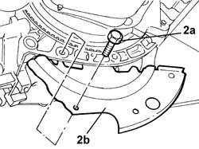
Applies to: engines: 1.6 16v; all production periods
1. Undo the drain plug and drain the engine oil.
2. Undo the bolts fixing the crankcase sump.
3. Cut the crankcase sump sealant using an appropriate tool.
Description | Code | |
|---|---|---|
3 | Blade | 1.870.718.000 |
4. Remove the crankcase sump.
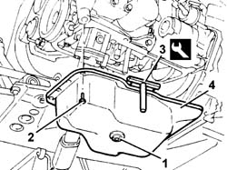
Applies to: engines: 1.6 16v; all production periods
Refitting
RemovingClean the matching surfaces between the crankcase sump and the cylinder block/crankcase.
Apply silicon sealant to the entire perimeter of the crankcase sump.
Position the crankcase sump in its housing and secure it tightening the bolts to the recommended torque.
Fastening | Component | dia | Value (daNm) | |
|---|---|---|---|---|
- | Bolt | ENGINE OIL SUMP | M6 | 0.9 |
Tighten the engine oil drain plug to the recommended torque.
Fastening | Component | dia | Value (daNm) | |
|---|---|---|---|---|
- | Plug | ENGINE OIL DRAIN PLUG | M22 | 5 |
Refit the lower flywheel guard and secure it using the bolts.
Op. 7055B54 PROTECTION/GUARD UNDER ENGINE - R.R.
Remove the vehicle from the lift.
Applies to: engines: 1.3 JTD 16V; all production periods
Removing
RefittingPosition the vehicle on a lift.
Proceed with the removal
Op. 7055B54 PROTECTION/GUARD UNDER ENGINE - R.R..
Proceed with the removal
Op. 2110A60 MANUAL GEARBOX/ENGINE COUPLING BRACKET - R+R.
1. Undo the drain plug in the crankcase sump and leave the engine oil to drain into a suitable container.
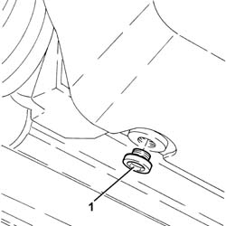
Applies to: engines: 1.3 JTD 16V; all production periods
1. Undo the nuts (1a) and bolts (1b) securing the crankcase sump.
2. Cut the crankcase sump sealant using the tool.
Description | Code | |
|---|---|---|
2 | Blade | 1.870.718.000 |
3. Remove the crankcase sump.
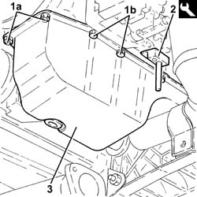
Applies to: engines: 1.3 JTD 16V; all production periods
Refitting
RemovingClean the residues of sealan from the matching surfaces between the lower engine block and the crankcase sump.
1. Apply a strip of recommended silicon sealant to the contact surfaces between the crankcase sump and lower crankcase as shown in the diagram in the figure.
N. A: The sealant strip must be unbroken. The sealant strip diameter must be 3.5 0.5 mm
Type | Component | Description | Qty. | |
|---|---|---|---|---|
1 | Sealant | ENGINE OIL SUMP | LOCTITE 5900 | - |
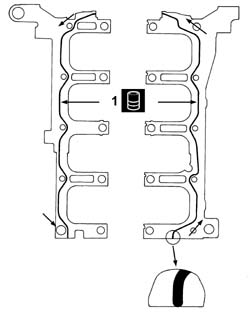
Applies to: engines: 1.3 JTD 16V; all production periods
1. Position the crankcase sump (1a) in its housing and secure it tightening the bolts (1b) and the nuts (1c) to the recommended torque.
Fastening | Component | dia | Value (daNm) | |
|---|---|---|---|---|
1b | Bolt | ENGINE OIL SUMP | M6 | (Lower engine crankcase side) 0.8 - 1.0 |
Fastening | Component | dia | Value (daNm) | |
|---|---|---|---|---|
1c | Nut | ENGINE OIL SUMP | M6 | (Cam cover side) 0.8 ÷ 1.0 |
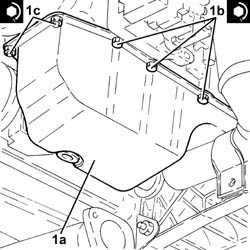
Applies to: engines: 1.3 JTD 16V; all production periods
1. Tighten the drain plug in the crankcase sump to the recommended torque.
Fastening | Component | dia | Value (daNm) | |
|---|---|---|---|---|
1 | - | ENGINE OIL DRAIN PLUG | M14 | (Crankcase sump side) 1.8 - 2.2 |
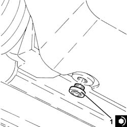
Applies to: engines: 1.3 JTD 16V; all production periods
Proceed with the refitting
Op. 2110A60 MANUAL GEARBOX/ENGINE COUPLING BRACKET - R+R.
Refill the engine oil lubrication system
Op. 0010T11 ENGINE OIL - CHECK LEVEL AND TOP UP.
Proceed with the refitting
Op. 7055B54 PROTECTION/GUARD UNDER ENGINE - R.R..
Remove the vehicle from the lift.
Applies to: engines: 1.9 DIESEL; all production periods
Removing
RefittingPosition the vehicle on the lift.
Op. 7055B54 PROTECTION/GUARD UNDER ENGINE - R.R.
Op. 1076B50 EXHAUST PIPE ATTACHMENT TO ENGINE/MANIFOLD - R + R
1. Undo the lower oil dipstick tube retaining bolt.
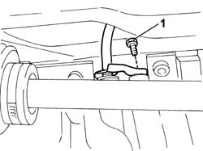
Applies to: engines: 1.9 DIESEL; all production periods
Position a suitable container for collecting the engine oil.
1. Undo the plug and drain the engine oil into the container positioned previously.
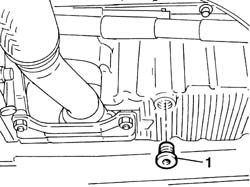
Applies to: engines: 1.9 DIESEL; all production periods
1. Undo the retaining bolts.
2. Position the flywheel guard.
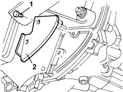
Applies to: engines: 1.9 DIESEL; all production periods
1. Position a hydraulic column lift underneath the engine oil sump.
2. Undo the lower bolts fixing the engine oil sump to the gearbox-differential unit.
3. Remove the plugs on the flywheel guard and use tools (3a) and (3b) to unscrew the front and rear bolts (3c) and side bolts (3d) securing the oil sump to the crankcase.
3. Use the tool to cut the strip of silicone sealant between the sump and crankcase.
4. Remove the engine oil sump.
Description | Code | |
|---|---|---|
3a | Spanner | 1.860.834.000 |
Description | Code | |
|---|---|---|
3b | Spanner | 1.860.833.000 |
Description | Code | |
|---|---|---|
4 | Blade | 1.870.718.000 |
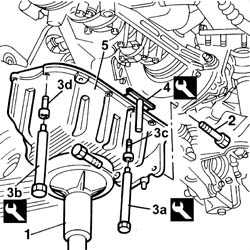
Applies to: engines: 1.9 DIESEL; all production periods
Refitting
RemovingClean the surfaces of the oil sump and the engine crankcase thoroughly completely removing the remaining sealant.
Apply silicon sealant to the entire perimeter of the oil sump.
Type | Component | Description | Qty. | |
|---|---|---|---|---|
- | Silicon sealant | ENGINE OIL SUMP | Arexon RHODORSIL 5552 | - |
Position the crankcase sump in its seat.
Tighten the front and rear bolts to torque using an appropriate wrench.
Description | Code | |
|---|---|---|
- | Spanner | 1.860.834.000 |
Fastening | Component | dia | Value (daNm) | |
|---|---|---|---|---|
- | Bolt | ENGINE OIL SUMP | M8 | (Cylinder block/crankcase) 2.5 |
Tighten the side bolts to torque using an appropriate wrench.
Description | Code | |
|---|---|---|
- | Spanner | 1.860.833.000 |
Fastening | Component | dia | Value (daNm) | |
|---|---|---|---|---|
- | Bolt | ENGINE OIL SUMP | M6 | (Cylinder block/crankcase) 0.9 |
Tighten the two bolts fixing the sump to the gearbox-differential unit to torque.
Fastening | Component | dia | Value (daNm) | |
|---|---|---|---|---|
- | Bolt | MANUAL GEARBOX/DIFFERENTIAL | M10 X 1.25 | (Joint to oil sump) 5 |
Fit the plugs of the sump side fastenings to the gearbox.
Fit the flywheel guard.
Tighten the lower bolt fixing the engine oil dipstick pipe.
Tighten the engine oil sump plug to torque.
Fastening | Component | dia | Value (daNm) | |
|---|---|---|---|---|
- | Plug | ENGINE OIL DRAIN PLUG | M18 x 1.5 | 2 |
Op. 1076B50 EXHAUST PIPE ATTACHMENT TO ENGINE/MANIFOLD - R + R
Op. 0010T11 ENGINE OIL - CHECK LEVEL AND TOP UP
Op. 7055B54 PROTECTION/GUARD UNDER ENGINE - R.R.
Remove the vehicle from the lift.
Applies to: engines: 1.9 JTD 8V; all production periods
Removing
RefittingPosition the vehicle on a lift.
Proceed with the removal
Proceed with the removal
Op. 5530B52 BATTERY SUPPORT/DRIP TRAY - R.R..
Proceed with the removal
Op. 4450B12 FRONT WHEELS (TWO) - R.R..
Proceed with the removal
Op. 1044B10 FUEL FILTER ASSEMBLY - R + R OR REPLACE.
Proceed with the removal
Op. 7210E22 R.R. WINDSCREEN BASE TRIM.
Proceed with the removal
Op. 7055B54 PROTECTION/GUARD UNDER ENGINE - R.R..
Proceed with the removal
Op. 7210E10 R.R. FRONT BUMPER.
Drain the air conditioning system
Op. 5040A10 AIR CONDITIONING REFRIGERANT CIRCUIT - DRYING AND REPRESSURIZING.
Proceed with the removal
Op. 4130B10 POWER STEERING FLUID RESEVOIR - R.R..
Proceed with the removal
Op. 1088B10 ENGINE COOLING SUPPLY RESERVOIR - R.R..
Proceed with the removal
Op. 1004B10 POWER UNIT WITH MANUAL GEARBOX - R + R.
Proceed with the removal
Op. 1004d10 POWER UNIT (MANUAL GEARBOX), REMOVED, REMOVE AND RE-BUILD.
1. Use a hydraulic hoise with chains to support the power unit safely.
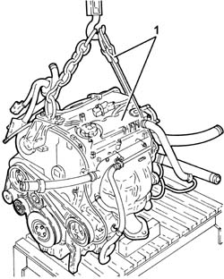
Applies to: engines: 1.9 JTD 8V; all production periods
1. Undo bolt (1a) and nut (1b) and remove the engine oil dipstick tube (1c) complete with dipstick.
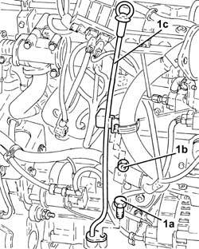
Applies to: engines: 1.9 JTD 8V; all production periods
Raise the engine, as necessary, using the hydraulic hoist.
1. Undo the engine oil drain plug and drain the oil.
2. Undo the bolts fixing the crankcase sump.
3. Cut the crankcase sump sealant using the tool.
Description | Code | |
|---|---|---|
3 | Blade | 1.870.718.000 |
4. Remove the crankcase sump.
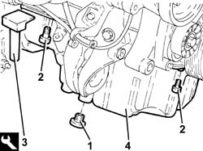
Applies to: engines: 1.9 JTD 8V; all production periods
Refitting
RemovingClean any sealant residues from the mating surfaces between the engine oil sump and the crankcase/crankshaft rear cover.
Apply silicon sealant to the entire perimeter of the crankcase sump.
1. Position the crankcase sump (1a) in its housing and secure it tightening the bolts (1b) to the recommended torque.
Fastening | Component | dia | Value (daNm) | |
|---|---|---|---|---|
1b | Bolt | ENGINE OIL SUMP | M6 | (Engine crankcase/flywheel side oil seal cover side) 0.8 - 1.1 |
Fastening | Component | dia | Value (daNm) | |
|---|---|---|---|---|
1b | Bolt | ENGINE OIL SUMP | M8 | (Engine crankcase/flywheel side oil seal cover side) 2.3 - 2.8 |
2. Fit an oil drain plug complete with new seal and tighten it to the recommended torque.
Fastening | Component | dia | Value (daNm) | |
|---|---|---|---|---|
2 | - | ENGINE OIL DRAIN PLUG | M18 | (Crankcase sump side) 1.8 - 2.2 |
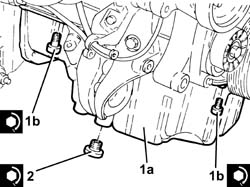
Applies to: engines: 1.9 JTD 8V; all production periods
Place the engine oil dipstick pipe complete with dipstick back in its housing and fasten it with the nut and bolt.
Lower the engine onto the workbench using the hydraulic hoist.
Proceed with the refitting
Op. 1004d10 POWER UNIT (MANUAL GEARBOX), REMOVED, REMOVE AND RE-BUILD.
Proceed with the refitting
Op. 1004B10 POWER UNIT WITH MANUAL GEARBOX - R + R.
Proceed with the refitting
Op. 1088B10 ENGINE COOLING SUPPLY RESERVOIR - R.R..
Proceed with the refitting
Op. 4130B10 POWER STEERING FLUID RESEVOIR - R.R..
Drain the air conditioning system
Op. 5040A10 AIR CONDITIONING REFRIGERANT CIRCUIT - DRYING AND REPRESSURIZING.
Proceed with the refitting
Op. 7210E10 R.R. FRONT BUMPER.
Proceed with the refitting
Op. 7055B54 PROTECTION/GUARD UNDER ENGINE - R.R..
Proceed with the refitting
Op. 7210E22 R.R. WINDSCREEN BASE TRIM.
Proceed with the refitting
Op. 1044B10 FUEL FILTER ASSEMBLY - R + R OR REPLACE.
Proceed with the refitting
Op. 4450B12 FRONT WHEELS (TWO) - R.R..
Proceed with the refitting
Op. 5530B52 BATTERY SUPPORT/DRIP TRAY - R.R..
Proceed with the refitting
Refill the engine cooling system
Op. 0010T20 ENGINE COOLANT - CHANGE.
Remove the vehicle from the lift.
Applies to: engines: 1.4 8v; all production periods
Removing
RefittingOp. 0010T12 ENGINE OIL AND FILTER - REPLACE
Op. 2110A60 MANUAL GEARBOX/ENGINE COUPLING BRACKET - R+R
- Disconnect the exhaust pipe from the flange and from the flexible mountings, move it aside and secure it appropriately.
1. Undo the bolt securing the exhaust pipe bracket to the gearbox.
2. Undo the bolts (2a) and remove the flywheel guard (2b).
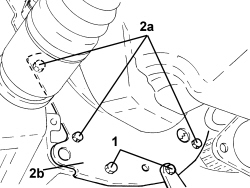
Applies to: engines: 1.4 8v; all production periods
1. Undo the nuts (1a) and the bolts (1b).
2. Remove the sealant using tool (2a) and remove the engine oil sump (2b).
Description | Code | Function | |
|---|---|---|---|
- | Blade | 1.870.718.000 | Cut the crankcase sump sealant |
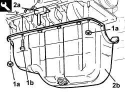
Applies to: engines: 1.4 8v; all production periods
Refitting
Removing- Thoroughly clean traces of sealant from the mating surfaces between the crankcase sump and engine block.
- Apply silicone sealant to the oil sump fitting surface.
- Refit the oil sump in its seat and tighten the bolts to the recommended torque.
Value daNm | Fastening | Component | dia | |
|---|---|---|---|---|
- | 2.2 ÷ 2.7 | Bolt | Engine oil sump - crankcase side | M8 |
Value daNm | Fastening | Component | dia | |
|---|---|---|---|---|
- | 0.8 ÷ 1.0 | Nut | Engine oil sump - rear cover side and oil pump side | M6 |
- Refit the flywheel guard and secure it using the bolts.
- Tighten the bolt securing the exhaust pipe bracket to the gearbox.
- Refit in its seat and connect to the flange and to the exhaust pipe flexible mounts.
Topics linked from this page (19)
- 0010T10 change engine oil
- 0010T11 engine oil check level and top up
- 0010T12 engine oil and filter replace
- 0010T20 coolant change
- 1004B10 POWER UNIT WITH MANUAL GEARBOX - R.R
- 1004d10 power unit (manual gearbox), removed, remove and re-build
- 1020A30 engine oil drain plug - replace
- 1044B10 fuel filter assembly - r + r or replace
- 1076B50 exhaust pipe attachment to engine - r + r
- 1088B10 engine cooling tank - r + r
- 2110a60 manual gearbox/engine coupling bracket - r+r
- 4130B10 power steering fluid resevoir r r
- 4450B12 front or rear wheels (two) - r+r
- 5040A10 Air conditioning refrigerant CIRCUIT - Draining and Refilling
- 5530B10 battery - r+r
- 5530B52 Battery DRIP TRAY/SUPPORT - R.R.
- 7055B54 under-engine guard - r r
- 7210E10 R.R. FRONT BUMPER
- 7210E22 R.R. WINDSCREEN BASE TRIM
Topics that link to this page (15)
- X12 ENGINE OIL LEAKS
- 1020B10 cover of timing system with chain drive - r + r replace oil seal and gasket
- 1020D10 front crank shaft oil seal cover - r + r and replace seals with timing belt removed
- 1020D12 front crank shaft oil seal cover - r + r and replace seals
- 1020D14 front crank shaft oil seal cover - r + r and replace seals for versions with oil pump on crank shaft, timing side
- 1020D30 oil seal cover, fly wheel side - r + r and replace seals
- 1028H12 SET OF PISTONS WITH CONNECTING RODS - R.R WITH CYLINDER HEAD/S REMOVED
- 1028H20 piston with connecting rod - r r
- 1028H21 piston with connecting rod - r r
- 1032B46 toothed drive pulley - r + r
- 1032B60 bolt pulley - r r
- 1032A12 CHAIN AND GEARS for timing system - R.R. for timing or Replacement.
- 1032C40 Timing CHAIN TENSIONER PLATE - R.R.
- 1084B12 engine oil pump - r+r
- 1084B26 emgine oil intake duct - r r